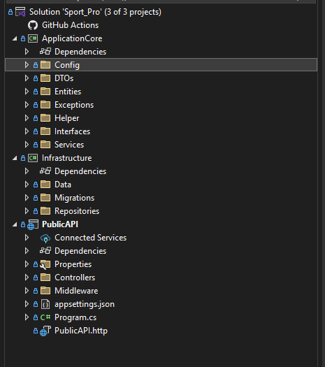

.NET Project
← Quay lại trang chính
1. Bước đầu với .NET
Project có cấu trúc 3 tầng như sau:
ApplicationCore: là tầng xử lý nghiệp vụ chính của project
Infractructure: là tầng cung cấp các dịch vụ cho tầng ApplicationCore
PublicAPI: là tầng thực hiện các API cho client
